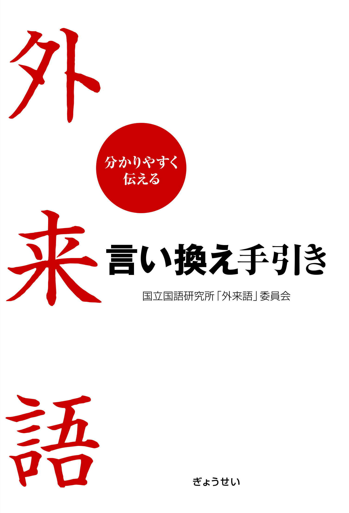

「外来語」言い換え提案
国立国語研究所
分かりやすく伝える
外来語 言い換え手引き

「外来語」言い換え提案の全文と関連する読み物を掲載
分かりやすく伝える 外来語 言い換え手引き （平成18年6月刊行）
国立国語研究所「外来語」委員会編
ぎょうせい
刊 1524円（本体）
目次
前書き
この本を使う人のために
外来語の氾濫とコミュニケーション上の支障
公共性の高い場面での言葉遣い
外来語が分かりにくくて困ること
この本の目指すところ
分かりにくい外来語とは
分かりやすく表現するための留意点
語による理解度の違いに配慮を
世代による理解度の違いに配慮を
言い換え語は外来語の原語に対するものではないことに注意を
場面や文脈により言い換え語を使い分ける工夫を
専門的な概念を伝える場合は説明を付け加える配慮を
現代社会にとって大切な概念の定着に役立つ工夫を
分かりやすく伝えるための手引きとして
外来語を分かりやすくする手引き（「外来語」言い換え提案）
「外来語を分かりやすくする手引き」の見方
「外来語」言い換え提案 176語の解説
01 アーカイブ ～ 176 ワンストップ
「外来語」言い換え提案の現場
１． 分かりにくい外来語はどの分野に多いか
２． 言い換え語を絞り込む苦心
３． 「外来語」言い換え提案に寄せられる意見
外来語の定着度
１． 外来語がどの程度定着しているかを調べる調査
２． 調査のあらまし
３． 「外来語」言い換え提案に取り上げた外来語の調査結果
外来語の実態 ―調査と解説―
１．外来語の比率とその増加
２．公共性の高い媒体における外来語の実態
３．外来語に関する意識の世代差
４．外来語の定着度の多様性
５．外来語と和語・漢語との使い分け―使用者と場面―
６．外来語と和語・漢語との使い分け―意味と感覚―
７．外来語と言い換え語の分かりやすさ
８．外来語の言い換えの必要性
外来語索引
国立国語研究所「外来語」委員会 設立趣意書
国立国語研究所「外来語」委員会 委員一覧
編集後記
お知らせ
「外来語」にかかわる刊行物(上記以外)
新「ことば」シリーズ19 外来語と現代社会 （平成18年3月刊行）
国立国語研究所編 国立印刷局刊 460円（本体）
本ページに関するお問い合わせは
こちら
へ
©
国立国語研究所
/
リンクと複製について
最終更新日： 2006-07-11 （公開開始日： 2007-07-11）